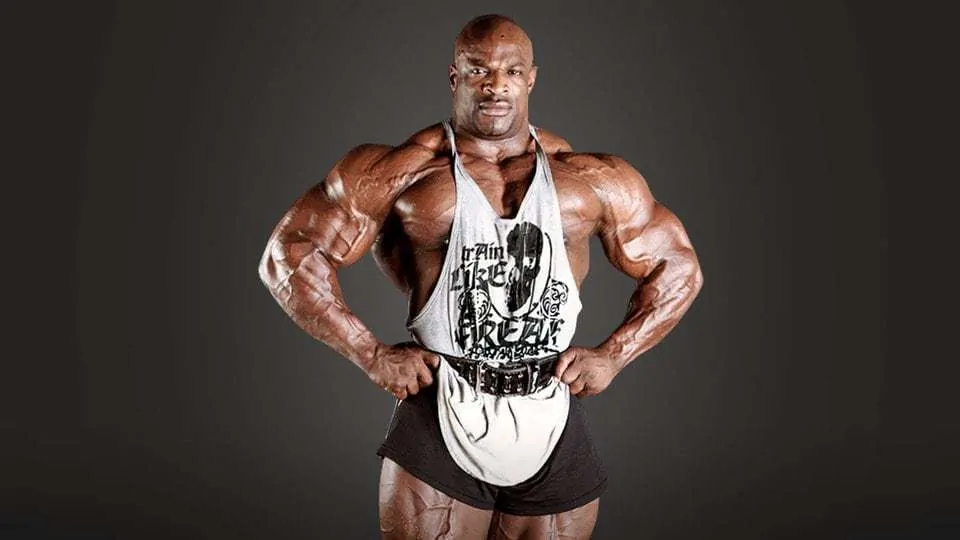

records e levantamento de peso pesado
ou sou isaac futuro pawrlifiting e irei motrar os maiores records de levantamento de peso do mundo
Holly Coleman:
8 títulos do Mr. Olympia: Ele é o maior vencedor da história do fisiculturismo (empatado com Lee Haney), tendo conquistado o troféu máximo de forma consecutiva entre 1998 e 2005.
Revolução no esporte: Conhecido como "The King" (O Rei), ele elevou o padrão de massa muscular e densidade a um nível nunca antes visto, marcando a "era de ouro" moderna do esporte.
Cargas de treino lendárias: Ficou mundialmente famoso por sua força absurda, realizando agachamentos e leg press com mais de 1.000 kg, provando que unia força bruta com hipertrofia.
